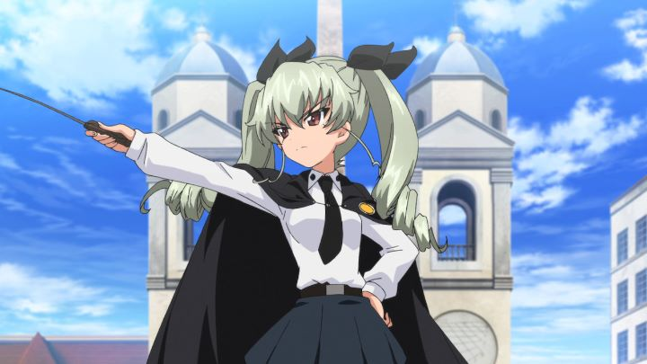

Disclaimer: This review covers "Girls und Panzer - complete OVA series" (2012-2013) and "Girls und Panzer - This is the Real Anzio Battle!" (2014), as released by Sentai Filmworks in North America.Did you enjoy "Girls und Panzer," the 2012 anime of cute school girls driving battle tanks to save their school? Was 12 episodes not enough to cover a story that was fully summarized by that last sentence? Don't worry, there's plenty more to watch. At the time of this writing, two OVA sets have been released on North America by Sentai Filmworks: one is a set of 6 episodes tied directly to the first season, and one is a separate double-length episode that covers an event completely skipped by that season. The "OVA series" consists of 6 episodes, each between 5 and 20 minutes long (including the full opening and ending credits from Season 1). The episodes are mostly inconsequential in terms of story: two revolve around swimsuits and a beach trip, and a third includes a trip to a hot spring. One is just a uncut version of the "pink fish" dance referenced in the main show. Cute, yes, but probably meant for a specific portion of the original audience. These episodes aren't entirely devoid of story, but they are otherwise wholly unnecessary to enjoy the plot (what little of a plot there was) in Season 1. I suppose it's cute and fun to enjoy, but not to such an extent that I would recommend them to anyone but hardcore fans. And since tank battles are nowhere to be seen here, the animation isn't as impressive, and the episodes overall aren't especially compelling. Comedy fans might be surprised to catch obscure pop culture references to "Super Mario" and an old "Monty Python" sketch; these did make me laugh for appearing at all, but I suspect the average viewer would simply be confused.The stand-alone OVA, titled "This is the Real Anzio Battle!," is a bit better. In the middle of Season 1, the Ooarai School's Tankery team worries about their upcoming tournament match with Anzio High, and then... it's completely skipped, moving straight to the next match. Perhaps there wasn't enough time to animate it? This OVA fills in that gap, almost as if you were intended to watch it in the middle of Season 1. It's much less about the slice-of-life comedy, and more about infiltration, tactics, and tension of the full battle. But the story here isn't all that great either, beyond the opportunity to flesh out the new Italian school. The big highlight, if any, is the animation, utilizing 3D animation in ways that exceeds the action seen in the main series.  If you haven't seen Season 1, you'll be a bit lost regarding who these characters are, and why it's OK for young school girls to drive heavy military vehicles. If you have seen Season 1... were you really so eager to watch more? "Girls und Panzer" has a simple premise that doesn't require much extra outside the complete main series. The OVAs aren't necessarily bad, but you may be left wondering why they exist at all, or why they weren't placed with the original series in the first place. I didn't feel any real fatigue with the premise after watching the OVAs, but I can't imagine anyone getting excited to see them. As fun as it is to see the girls again, these were simply just OK, and not much else.It's a little strange that these would be released at all in America, especially since they were released separate from the main series. At the time of release, it wasn't known that more content would be produced: I'm certain Sentai Filmworks is waiting for the right time to re-release everything in a single large collection. Until then, it's not hard to find these for cheap during a sale. I would recommend watching Season 1 of "Girls und Panzer" first, and deciding if you love it enough to want to see the OVAs. Chances are, you'll agree: "if you've seen one, you've seen them all."
- "Ani" More reviews can be found at : https://2danicritic.github.io/ Previous review: review_Girls_und_Panzer_-_Der_Film Next review: review_Go_West_-_A_Lucky_Luke_Adventure